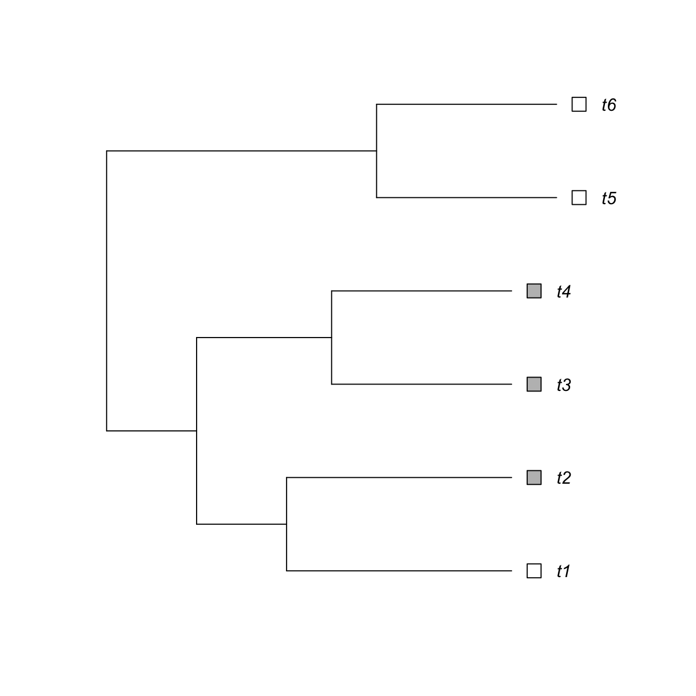
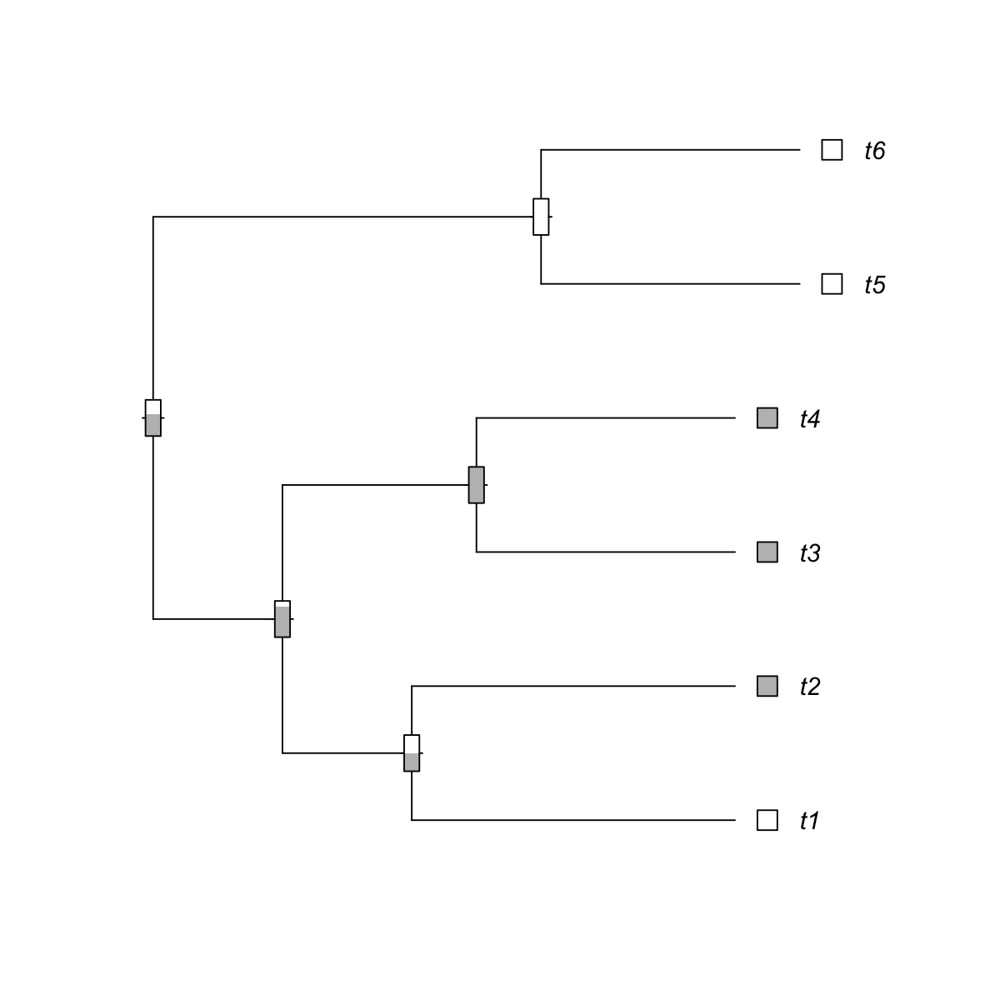

dcAncestralMP is supposed to reconstruct ancestral discrete
states using a maximum parsimony-modified Fitch algorithm. In a
from-tip-to-root manner, ancestral state for an internal node is
determined if a state is shared in a majority by all its children. If
two or more states in a majority are equally shared, this internal node
is temporarily marked as an unknown tie, which is further resolved in a
from-root-to-tip manner: always being the same state as its direct
parent holds. If the ties also occur at the root, the state at the root
is set to the last state in ties (for example, usually being 'present'
for 'present'-'absent' two states).
dcAncestralMP(data, phy, output.detail = F, parallel = T, multicores = NULL, verbose = T)
source("http://bioconductor.org/biocLite.R");
biocLite(c("foreach","doMC")). If not yet installed, this option will
be disabledIt depends on the 'output.detail'. If FALSE (by default), a matrix is returned, with the columns responding to the input data columns, and rows responding to node index in the phylo-formatted tree. If TRUE, a nested list is returned. Outer-most list is for characters (corresponding to columns of input data matrix), in which each elemenl is a list (inner-most) consisting of three components ("states", "transition" and "relative"):
states: a named vector storing states (extant and
ancestral states)
transition: a posterior transition matrix between states
relative: a matrix of nodes X states, storing relative
probability
This maximum parsimony algorithm for ancestral discrete state reconstruction is attributable to the basic idea as described in http://sysbio.oxfordjournals.org/content/20/4/406.short
# 1) a newick tree that is imported as a phylo-formatted tree tree <- "(((t1:5,t2:5):2,(t3:4,t4:4):3):2,(t5:4,t6:4):6);" phy <- ape::read.tree(text=tree) # 2) an input data matrix storing discrete states for tips (in rows) X four characters (in columns) data1 <- matrix(c(0,rep(1,3),rep(0,2)), ncol=1) data2 <- matrix(c(rep(0,4),rep(1,2)), ncol=1) data <- cbind(data1, data1, data1, data2) colnames(data) <- c("C1", "C2", "C3", "C4") ## reconstruct ancestral states, without detailed output res <- dcAncestralMP(data, phy, parallel=FALSE)Start at 2015-06-04 16:16:24 The input tree has '6' tips. The input data has 4 characters/columns (with 2 distinct patterns). 1 out of 2 (2015-06-04 16:16:24) 2 out of 2 (2015-06-04 16:16:24) Finish at 2015-06-04 16:16:24 Runtime in total is: 0 secsresC1 C2 C3 C4 1 0 0 0 0 2 1 1 1 0 3 1 1 1 0 4 1 1 1 0 5 0 0 0 1 6 0 0 0 1 7 1 1 1 0 8 1 1 1 0 9 1 1 1 0 10 1 1 1 0 11 0 0 0 1# 3) an input data matrix storing discrete states for tips (in rows) X only one character data <- matrix(c(0,rep(1,3),rep(0,2)), ncol=1) ## reconstruct ancestral states, with detailed output res <- dcAncestralMP(data, phy, parallel=FALSE, output.detail=TRUE)Start at 2015-06-04 16:16:24 The input tree has '6' tips. The input data has 1 characters/columns (with 1 distinct patterns). 1 out of 1 (2015-06-04 16:16:24) Finish at 2015-06-04 16:16:24 Runtime in total is: 0 secsres$`1` $`1`$states 1 2 3 4 5 6 7 8 9 10 11 "0" "1" "1" "1" "0" "0" "1" "1" "1" "1" "0" $`1`$transition 0 1 0 2 1 1 2 6 $`1`$relative 0 1 1 1.0000 0.0000 2 0.0000 1.0000 3 0.0000 1.0000 4 0.0000 1.0000 5 1.0000 0.0000 6 1.0000 0.0000 7 0.4000 0.6000 8 0.1667 0.8333 9 0.5000 0.5000 10 0.0000 1.0000 11 1.0000 0.0000## get the inner-most list res <- res[[1]] ## visualise the tree with ancestral states and their conditional probability Ntip <- ape::Ntip(phy) Nnode <- ape::Nnode(phy) color <- c("white","gray") ## visualise main tree ape::plot.phylo(phy, type="p", use.edge.length=TRUE, label.offset=1, show.tip.label=TRUE, show.node.label=FALSE)## visualise tips (state 1 in gray, state 0 in white) x <- data[,1] ape::tiplabels(pch=22, bg=color[as.numeric(x)+1], cex=2, adj=1)## visualise internal nodes ### thermo bar to illustrate relative probability (state 1 in gray, state 0 in white) ape::nodelabels(thermo=res$relative[Ntip+1:Nnode,2:1], piecol=color[2:1], cex=0.75)### labeling reconstructed ancestral states ape::nodelabels(text=res$states[Ntip+1:Nnode], node=Ntip+1:Nnode, frame="none", col="red", bg="transparent", cex=0.75)
dcAncestralMP.r
dcAncestralMP.Rd
dcAncestralMP.pdf
dcAncestralML, dcTreeConnectivity,
dcDuplicated
){kind=link}
){kind=link}
){kind=link}
){kind=link}